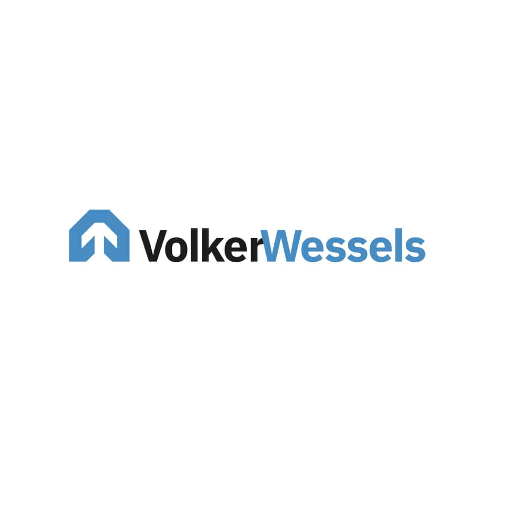

VolkerWessels Infra Digital
VolkerWessels Infra Digital (VW Infra Digital), interne ICT-dienstverlener voor VolkerWessels-Infrastructuur is altijd gericht op het leveren van betrouwbare en efficiënte ICT-oplossingen. Twee jaar geleden werd duidelijk dat er een nieuwe oplossing nodig was. Dit is het verhaal van hun overstap naar 4PS Construct en de rol van DIS in deze transitie.
Waarom koos VW Infra Digital voor 4PS?
Twee jaar geleden heeft Vialis besloten, een van de werkmaatschappijen binnen VolkerWessels Infrastructuur, over te stappen op 4PS Construct. Het contact met Conrad van Kooten en Edwin Leentfaar (beide eigenaren van DIS), speelde hierbij een cruciale rol. Via andere VolkerWessels-entiteiten zoals Hanab, ontdekte VW Infra Digital dat 4PS goed aansloot bij de behoefte van Vialis. Dit leidde tot de beslissing om het systeem te implementeren.
De rol van DIS
De overstap naar 4PS bracht de nodige uitdagingen met zich mee. Het team van VW Infra Digital moest verschillende systemen beheren die tegelijkertijd operationeel waren. Daarom werd gekozen voor een hybride model voor functioneel beheer. DIS speelde een belangrijke rol in het opzetten van functioneel beheer en het optimaliseren van het systeem vanaf de livegang.
Arnold Blokland functioneel beheerder van DIS, is het eerste aanspreekpunt voor VW Infra Digital. Wanneer er knelpunten zijn, kan het team van VW Infra Digital altijd bij DIS terecht voor ondersteuning. Dit zorgt voor een flexibele en efficiënte samenwerking, waarbij VW Infra Digital niet alleen geholpen wordt bij incidenten, maar er ook wordt meegedacht over verbeteringen en projecten.
Waarom DIS?
VW Infra Digital heeft voor DIS gekozen vanwege hun betrouwbaarheid en waardevolle expertise. “DIS is een betrouwbare en waardevolle partij”, zegt Jan Willem Flim, IT-manager bij VW Infra Digital. “Ze doen wat ze zeggen, zijn goed bereikbaar en schakelen snel. Dankzij hun kennis hebben wij veel geleerd.” Bovendien zorgt het gekoppelde ticketsysteem met ServiceNow ervoor dat VW Infra Digital en DIS altijd inzicht hebben in alle openstaande en gesloten support tickets.
De samenwerking met DIS
De samenwerking wordt als zeer positief ervaren. Jan Willem: ‘’De consultants van DIS beschikken niet alleen over de technische kennis, maar ook over de sociale vaardigheden om goed samen te werken met ons team. Dit helpt bij het snel en efficiënt oplossen van problemen en het doorvoeren van verbeteringen.’’ De consultants zorgen er ook voor dat VW Infra Digital van hun oplossingen leert. Hoewel VW Infra Digital een groot team heeft, wordt er regelmatig contact gezocht met DIS voor specialistische kennis bij complexere vragen.
Wat zou VW Infra Digital andere bedrijven adviseren?
Jan Willem adviseert andere bedrijven in de branche om met DIS in gesprek te gaan als ze een betrouwbare en deskundige partner nodig hebben. De waardevolle ondersteuning van DIS heeft niet alleen de implementatie van 4PS succesvol gemaakt, maar heeft VW Infra Digital ook op het gebied van 4PS geholpen om op een hoger niveau te opereren.
